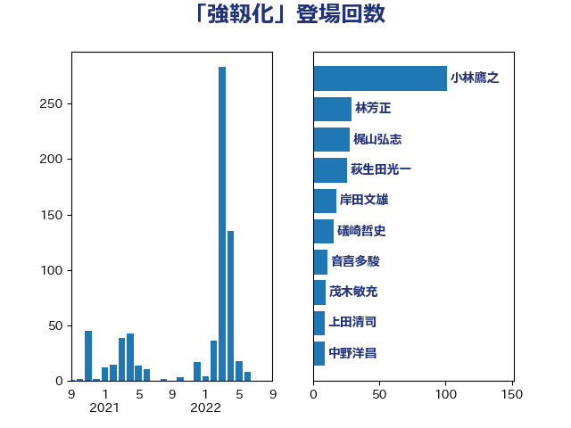

単語「強靱化」

| 小林鷹之 | 自由民主党 | 101 回 |
| 林芳正 | 自由民主党 | 29 回 |
| 梶山弘志 | 自由民主党 | 28 回 |
| 萩生田光一 | 自由民主党 | 26 回 |
| 岸田文雄 | 自由民主党 | 18 回 |
| 礒崎哲史 | 国民民主党 | 16 回 |
| 音喜多駿 | 日本維新の会 | 11 回 |
| 茂木敏充 | 自由民主党 | 10 回 |
| 上田清司 | 国民民主党 | 9 回 |
| 中野洋昌 | 公明党 | 9 回 |
| 岸信夫 | 自由民主党 | 9 回 |
| 浅野哲 | 国民民主党 | 9 回 |
| 中西祐介 | 自由民主党 | 8 回 |
| 吉田宣弘 | 公明党 | 8 回 |
| 徳永久志 | 立憲民主党 | 8 回 |
| 山谷えり子 | 自由民主党 | 6 回 |
| 平将明 | 自由民主党 | 6 回 |
| 菅義偉 | 自由民主党 | 6 回 |
| 三浦信祐 | 公明党 | 5 回 |
| 井上哲士 | 日本共産党 | 5 回 |
| 大野泰正 | 自由民主党 | 5 回 |
| 宮崎政久 | 自由民主党 | 5 回 |
| 小熊慎司 | 立憲民主党 | 5 回 |
| 小田原潔 | 自由民主党 | 5 回 |
| 浜地雅一 | 公明党 | 5 回 |
| 野上浩太郎 | 自由民主党 | 5 回 |
| 高木かおり | 日本維新の会 | 5 回 |
| 中川宏昌 | 公明党 | 4 回 |
| 大野敬太郎 | 自由民主党 | 4 回 |
| 太栄志 | 立憲民主党 | 4 回 |
| 小寺裕雄 | 自由民主党 | 4 回 |
| 小西洋之 | 立憲民主党 | 4 回 |
| 山際大志郎 | 自由民主党 | 4 回 |
| 工藤彰三 | 自由民主党 | 4 回 |
| 斉藤鉄夫 | 公明党 | 4 回 |
| 松原仁 | 立憲民主党 | 4 回 |
| 武田良太 | 自由民主党 | 4 回 |
| 江島潔 | 自由民主党 | 4 回 |
| 滝波宏文 | 自由民主党 | 4 回 |
| 田村憲久 | 自由民主党 | 4 回 |
| 石川大我 | 立憲民主党 | 4 回 |
| 西村康稔 | 自由民主党 | 4 回 |
| 鈴木敦 | 国民民主党 | 4 回 |
| 高木啓 | 自由民主党 | 4 回 |
| 國重徹 | 公明党 | 3 回 |
| 太田房江 | 自由民主党 | 3 回 |
| 後藤茂之 | 自由民主党 | 3 回 |
| 杉本和巳 | 日本維新の会 | 3 回 |
| 柴田巧 | 日本維新の会 | 3 回 |
| 森まさこ | 自由民主党 | 3 回 |
| 比嘉奈津美 | 自由民主党 | 3 回 |
| 河西宏一 | 公明党 | 3 回 |
| 片山大介 | 日本維新の会 | 3 回 |
| 近藤和也 | 立憲民主党 | 3 回 |
| 金子恭之 | 自由民主党 | 3 回 |
| 麻生太郎 | 自由民主党 | 3 回 |
| 伊東良孝 | 自由民主党 | 2 回 |
| 堀場幸子 | 日本維新の会 | 2 回 |
| 塩田博昭 | 公明党 | 2 回 |
| 室井邦彦 | 日本維新の会 | 2 回 |
| 宮崎雅夫 | 自由民主党 | 2 回 |
| 小沼巧 | 立憲民主党 | 2 回 |
| 山口那津男 | 公明党 | 2 回 |
| 岩本剛人 | 自由民主党 | 2 回 |
| 島尻安伊子 | 自由民主党 | 2 回 |
| 本庄知史 | 立憲民主党 | 2 回 |
| 杉尾秀哉 | 立憲民主党 | 2 回 |
| 片山さつき | 自由民主党 | 2 回 |
| 田畑裕明 | 自由民主党 | 2 回 |
| 石井拓 | 自由民主党 | 2 回 |
| 笠井亮 | 日本共産党 | 2 回 |
| 鈴木英敬 | 自由民主党 | 2 回 |
| 長坂康正 | 自由民主党 | 2 回 |
| 阿部司 | 日本維新の会 | 2 回 |
| 馬場成志 | 自由民主党 | 2 回 |
| 高橋光男 | 公明党 | 2 回 |
| 上杉謙太郎 | 自由民主党 | 1 回 |
| 二階俊博 | 自由民主党 | 1 回 |
| 伊佐進一 | 公明党 | 1 回 |
| 佐藤正久 | 自由民主党 | 1 回 |
| 加田裕之 | 自由民主党 | 1 回 |
| 加藤勝信 | 自由民主党 | 1 回 |
| 務台俊介 | 自由民主党 | 1 回 |
| 吉川ゆうみ | 自由民主党 | 1 回 |
| 塩川鉄也 | 日本共産党 | 1 回 |
| 大口善徳 | 公明党 | 1 回 |
| 宗清皇一 | 自由民主党 | 1 回 |
| 山崎誠 | 立憲民主党 | 1 回 |
| 山田賢司 | 自由民主党 | 1 回 |
| 岡本三成 | 公明党 | 1 回 |
| 岡田克也 | 立憲民主党 | 1 回 |
| 平木大作 | 公明党 | 1 回 |
| 斎藤洋明 | 自由民主党 | 1 回 |
| 新妻秀規 | 公明党 | 1 回 |
| 有村治子 | 自由民主党 | 1 回 |
| 本田顕子 | 自由民主党 | 1 回 |
| 杉久武 | 公明党 | 1 回 |
| 松下新平 | 自由民主党 | 1 回 |
| 松川るい | 自由民主党 | 1 回 |
| 森本真治 | 立憲民主党 | 1 回 |
| 武部新 | 自由民主党 | 1 回 |
| 泉田裕彦 | 自由民主党 | 1 回 |
| 清水真人 | 自由民主党 | 1 回 |
| 田村まみ | 国民民主党 | 1 回 |
| 石井啓一 | 公明党 | 1 回 |
| 石原正敬 | 自由民主党 | 1 回 |
| 石川昭政 | 自由民主党 | 1 回 |
| 神津たけし | 立憲民主党 | 1 回 |
| 神田憲次 | 自由民主党 | 1 回 |
| 穀田恵二 | 日本共産党 | 1 回 |
| 篠原豪 | 立憲民主党 | 1 回 |
| 紙智子 | 日本共産党 | 1 回 |
| 細田健一 | 自由民主党 | 1 回 |
| 美延映夫 | 日本維新の会 | 1 回 |
| 舞立昇治 | 自由民主党 | 1 回 |
| 芳賀道也 | 国民民主党 | 1 回 |
| 藤木眞也 | 自由民主党 | 1 回 |
| 西岡秀子 | 国民民主党 | 1 回 |
| 足立敏之 | 自由民主党 | 1 回 |
| 酒井庸行 | 自由民主党 | 1 回 |
| 里見隆治 | 公明党 | 1 回 |
| 野村哲郎 | 自由民主党 | 1 回 |
| 金子恵美 | 立憲民主党 | 1 回 |
| 鈴木俊一 | 自由民主党 | 1 回 |
| 青柳仁士 | 日本維新の会 | 1 回 |
| 馬場伸幸 | 日本維新の会 | 1 回 |
| 鬼木誠 | 立憲民主党 | 1 回 |